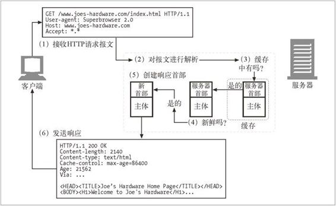
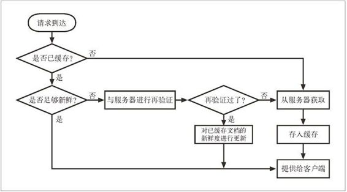

7.7 缓存的处理步骤
现代的商业化代理缓存相当地复杂。这些缓存构建得非常高效，可以支持 HTTP 和其他一些技术的各种高级特性。但除了一些微妙的细节之外，Web 缓存的基本工作原理大多很简单。对一条 HTTP GET 报文的基本缓存处理过程包括 7 个步骤（参见图 7-11）。
接收——缓存从网络中读取抵达的请求报文。
解析——缓存对报文进行解析，提取出 URL 和各种首部。
查询——缓存查看是否有本地副本可用，如果没有，就获取一份副本（并将其保存在本地）。
新鲜度检测——缓存查看已缓存副本是否足够新鲜，如果不是，就询问服务器是否有任何更新。
创建响应——缓存会用新的首部和已缓存的主体来构建一条响应报文。
发送——缓存通过网络将响应发回给客户端。
日志——缓存可选地创建一个日志文件条目来描述这个事务。

图 7-11 处理一个新鲜的缓存命中
7.7.1 第一步——接收
在第一步中，缓存检测到一条网络连接上的活动，读取输入数据。高性能的缓存会同时从多条输入连接上读取数据，在整条报文抵达之前开始对事务进行处理。
7.7.2 第二步——解析
接下来，缓存将请求报文解析为片断，将首部的各个部分放入易于操作的数据结构中。这样，缓存软件就更容易处理首部字段并修改它们了。1
1 解析程序还要负责首部各部分的标准化，将大小写或可替换数据格式之类不太重要的区别都看作等效的。而且，某些请求报文中包含有完整的绝对 URL，而其他一些请求中包含的则是相对 URL 和 Host 首部，所以解析程序通常都要将这些细节隐藏起来（参见 2.3.1 节）。
7.7.3 第三步——查找
在第三步中，缓存获取了 URL，查找本地副本。本地副本可能存储在内存、本地磁盘，甚至附近的另一台计算机中。专业级的缓存会使用快速算法来确定本地缓存中是否有某个对象。如果本地没有这个文档，它可以根据情形和配置，到原始服务器或父代理中去取，或者返回一条错误信息。
已缓存对象中包含了服务器响应主体和原始服务器响应首部，这样就会在缓存命中时返回正确的服务器首部。已缓存对象中还包含了一些元数据（metadata），用来记录对象在缓存中停留了多长时间，以及它被用过多少次等。2
2 复杂的缓存还会保留引发服务器响应的原始客户端响应首部的一份副本，以用于 HTTP/1.1 内容协商（参见第 17 章）。
7.7.4 第四步——新鲜度检测
HTTP 通过缓存将服务器文档的副本保留一段时间。在这段时间里，都认为文档是“新鲜的”，缓存可以在不联系服务器的情况下，直接提供该文档。但一旦已缓存副本停留的时间太长，超过了文档的新鲜度限值（freshness limit），就认为对象“过时”了，在提供该文档之前，缓存要再次与服务器进行确认，以查看文档是否发生了变化。客户端发送给缓存的所有请求首部自身都可以强制缓存进行再验证，或者完全避免验证，这使得事情变得更加复杂了。
HTTP 有一组非常复杂的新鲜度检测规则，缓存产品支持的大量配置选项，以及与非 HTTP 新鲜度标准进行互通的需要则使问题变得更加严重了。本章其余的大部分篇幅都用于解释新鲜度的计算问题。
7.7.5 第五步——创建响应
我们希望缓存的响应看起来就像来自原始服务器的一样，缓存将已缓存的服务器响应首部作为响应首部的起点。然后缓存对这些基础首部进行了修改和扩充。
缓存负责对这些首部进行改造，以便与客户端的要求相匹配。比如，服务器返回的可能是一条 HTTP/1.0 响应（甚至是 HTTP/0.9 响应），而客户端期待的是一条 HTTP/1.1 响应，在这种情况下，缓存必须对首部进行相应的转换。缓存还会向其中 插入新鲜度信息（Cache-Control、Age 以及 Expires 首部），而且通常会包含一个 Via 首部来说明请求是由一个代理缓存提供的。
注意，缓存不应该调整 Date 首部。Date 首部表示的是原始服务器最初产生这个对象的日期。
7.7.6 第六步——发送
一旦响应首部准备好了，缓存就将响应回送给客户端。和所有代理服务器一样，代理缓存要管理与客户端之间的连接。高性能的缓存会尽力高效地发送数据，通常可以避免在本地缓存和网络 I/O 缓冲区之间进行文档内容的复制。
7.7.7 第七步——日志
大多数缓存都会保存日志文件以及与缓存的使用有关的一些统计数据。每个缓存事务结束之后，缓存都会更新缓存命中和未命中数目的统计数据（以及其他相关的度量值），并将条目插入一个用来显示请求类型、URL 和所发生事件的日志文件。
最常见的缓存日志格式为 Squid 日志格式和网景的可扩展通用日志格式，但很多缓存产品都允许用户创建自定义的日志文件。第 21 章探讨了日志文件格式。
7.7.8 缓存处理流程图
图 7-12 以简化形式显示了缓存是如何处理请求，以 GET 一个 URL 的。3
3 可以通过条件请求在一步里完成图 7-12 列出的资源再验证及获取（参见 7.8.4 节）。

图 7-12 缓存 GET 请求的流程图